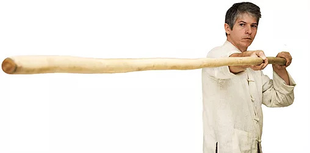

Wing Chun de Hong Kong para o Brasil
Por Thomas Pinheiro
Greco Wong
Sigung Greco Wong Wai Chung nasceu em Shangai, China em 1943. Cresceu e adquiriu educação em Hong Kong. Mestre Greco Wong foi apresentado às artes marciais quando cursava o ginásio, aprendendo com seus professores Shao Lin kung fu e esgrima ocidental. Desde então, treinou continuamente e pesquisou muitos estilos de kung fu, tendo se especializado em Wing Chun e Tik Poh (corpo de ferro). Sifu Wong aprendeu kung fu com os seguintes mestres; Wing Chun: mestres Mak Po, Tsui Sheun Tin e Moy Yat (Posteriormente, foi apresentado a Yip Man, com quem teve, durante bom tempo, treinamento direto na casa do Grande Mestre). Estilo Tik Poh Sum: com Sifu Ng. Estilo White Crane: com mestres Chow Yut, Lung Kong Fu. Estilo Tai Chi: com mestres Cheng Tee Hong e Wong Lit.
As famílias de Greco Wong e Moy Yat se conheciam e ambos eram amigos de infância. Interessados em artes marciais, Greco Wong foi treinar tai chi e posteriormente o estilo Pak Hok e Moy Yat foi estudar Wing Chun. Moy Yat necessitava de um parceiro de treino para seu Wing Chun e Greco Wong acabou iniciando no Wing Chun por este motivo. Praticando chi sau com Moy Yat, Greco Wong acabou conhecendo Mak Po, com quem acabou por praticar incansavelmente.
Quando Moy Yat abriu sua escola em Hong Kong, convidou Greco Wong para ser instrutor na recém escola de Wing Chun. Antes de treinar com o próprio Yip Man, Greco Wong fora treinar com Tsui Sheun Tin, que tinha a reputação de treinar pessoalmente com seus alunos tocando-os. Greco Wong costumava levar seus alunos para participarem de lutas reais contra encrenqueiros de rua e lutadores de outros estilos.
Durante os anos que morou em Londres, Greco Wong além de aplicar seu Wing Chun em situações de rua, também experimentou e superou outros professores de wing chun. Quando em 1965, Greco Wong fora instrutor chefe da academia de Moy Yat e também o presidente de um centro academico de uma faculdade em Hong Kong, e nesta faculdade aceitou ensinar o wing chun a cinco pessoas entre elas Thomas Lo Siu Chung, que por sua vez era o tesoureiro do centro academico e que desde cedo aprendera várias técnicas de kung fu com tios e se interessava muito por arte marcial, sempre com intenção de experimentar em situações de rua.
Mestre Greco Wong exigia muito no treino, e dos cinco alunos iniciais; apenas Thomas Lo aguentou o árduo treino, treinando com seu mestre até; a partida de mestre Wong para a Africa do Sul; ele atualmente reside no Canadá. Durante a entrevista para a revista Wing Chun Illustrated numero 1, após ter contado sobre seu contato com mestres como Mak Po e Moy Yat, Greco Wong falou um pouco mais sobre alguns dos outros nomes famosos no Wing Chun no momento:
"Quando Moy Yat deixou Hong Kong em 1963 para viajar ao redor do mundo como um marinheiro naquele ano, eu naturalmente queria continuar mantendo minha prática de Wing Chun. Então, antes que ele viajasse, Moy Yat me apresentou a Wong Shun Leung. Eu ainda era um estudante sem muito dinheiro, e Wong Shun Leung cobrava caro, $ 60 dólares por mês, por isso não poderia pagá-lo. Chu Shong Ting e Yip Man cobravam apenas $ 40,00 dólares. Então Moy Yat sugeriu que eu fosse treinar com Chu Shon Tin ou Yip Man. Primeiro treinei com Chu Shong Tin por um tempo. Eu admirava Chu Shong Tin como professor porque ele praticava pessoalmente com seus alunos. Mais tarde, fui praticar com Yip Man. A essa altura eu já tinha aprendido todas as três formas, chi sau e o mook jong. Eu só queria verificar e comparar as coisas que eu tinha aprendido com Moy Yat (tanto quanto os alunos de hoje em dia de Wing Chun vão a seminários diferentes, leem livros diferentes, e assistem a vídeos diferentes) e manter a prática do meu chi sau com os alunos diferentes de Chu Shong Tin e Yip Man. Alguns dos outros professores, no momento incluiam Ho Kam Ming, Jiu Wan, e o filho mais novo de Yip Man, Yip Ching. Seu filho mais velho, Yip Chun, estava lá em volta, mas não parecia estar realmente envolvido com o ensino. Eu costumava vê-lo, ocasionalmente, na escola de Yip Man, mas não vê-lo praticar com alguém, aplicação ou chi sau."
Mestre Greco Wong colaborou no lançamento do primeiro livro sobre Wing Chun, chamado wing chun kung fu, chinese self defense methods, escrito conjuntamente com R. Clausnitzer em 1969. Na publicação da revista Wing Chun Illustrade n2, publicada em 2011, Mestre Greco Wong menciona sobre seu discipulo Thomas Lo em um combate:
"Depois de ter aprendido de mim ainda apenas por um período curto, foi sozinho a uma academia de "Loon Ying Mor Kup" de um mestre, que ensinava em hong kong por muitos anos, e desafiou-o. Thomas Lo não demorou mais que um minuto para vencer o mestre que sangrava muito pelo nariz."
Thomas Lo
Sifu Thomas Lo Siu Chung; nasceu em Hong Kong, China, em 1943, imigrando para o Brasil em 1969, e sendo considerado o pioneiro do kung fu estilo wing chun kuen do País. Aprendeu Wing Chun com o mestre Wong Wai Chung; Tai Chi Chuan com o mestre Cheung Kwok Tai e Pa Kua com mestre Ho Ho Choy. Inicialmente, estabeleceu-se nas cidades de Amparo e Serra Negra, onde ministrou aulas do estilo wing chun kuen em clubes locais. Posteriormente mudou-se para São Paulo, onde montou sua academia por volta de 1976, na rua Augusta. Entre os anos de 1980 e 1984 lecionou apenas de forma particular, voltando a ensinar em academia em 1987. Entre 1996 e 2003 mestre Lo ministrou aulas e teve consultório na Wing Chun Kuen Pinheiros, onde leciona atualmente aulas de Wing Chun para professores, e aula de Tai Chi Chuan a leigos e alunos avançados.
Mestre Thomas Lo, atualmente além de ensinar Wing Chun Kuen, Yang Jia Tai Chi Chuan, Bo Ton Chin também exerce a prática de acupuntura, moxa bustão, tui na e utilização de ervas medicinais chinesas, sendo membro e diretor atuante da AZYMEC (associação de medicina tradicional chinesa que conta com o apoio do governo chinês). Mestre Thomas Lo também ocupou o cargo de representante da Cheung Kwok Tai Wushu Association (associação de kung fu de Hong Kong) entre os anos 1996 e 1998 no Brasil.
Continuando a linha do mestre Thomas Lo Siu Chung no Brasil; mestre Thomas Pinheiro nascido em 1967, na cidade de São Paulo. Iniciou sua prática no estilo Wing Chun de kung fu em 1982. Porém a partir de 1985, sempre interessado na melhoria de seu aprendizado, estudou Wing Chun seguindo a linha do mestre Koo Sang aprendendo até o chum kiu. Entre 1986 a 1993, recebeu treinamento sob a linha do mestre Fong Chi Wing, chegando até o aprendizado de armas; em 1995 montou seu próprio espaço, a Wing Chun Kuen Pinheiro. Em 1996, teve a felicidade ter mestre Thomas Lo como acupunturista e também dando aulas de Tai Chi Chuan na Wing Chun Kuen Pinheiro.
Thomas Pinheiro começou a receber ensinamentos de Wing Chun Kuen de seu sifu, Thomas Lo, a partir de 1996, sendo que em começo de 1997 tornou-se discipulo atuante, se manténdo até os dias de hoje; aprendeu completo os estilos Wing Chun Kuen e Tai Chi Chuan Yang, além de formação nas técnicas essenciais do Pa Kua, e básicas de Hakka Ton Long, desenvolveu-se na pratica de armas com bastão longo e sombrancelha, lança, espada, facão , faca borboleta. Fazem parte com mestre Thomas Lo aprendizado de treinamento de chi kung, exercicios chineses de fortalecimento e meditação